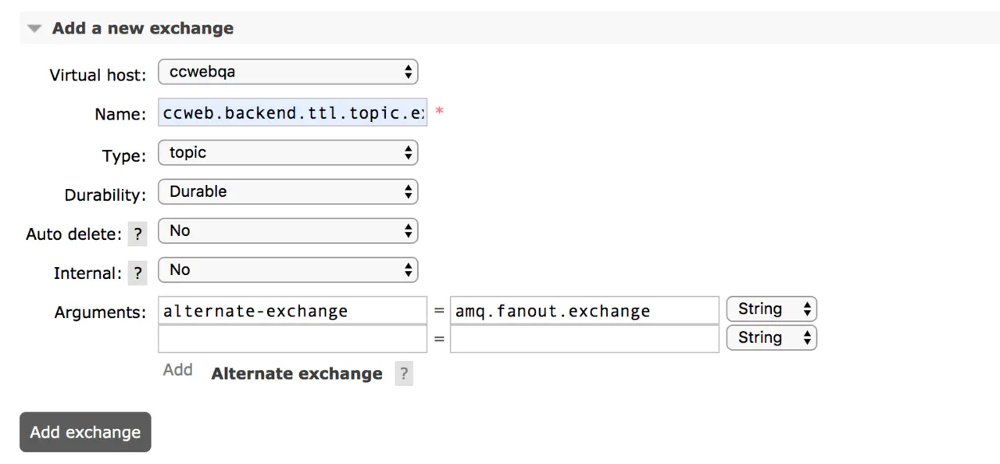
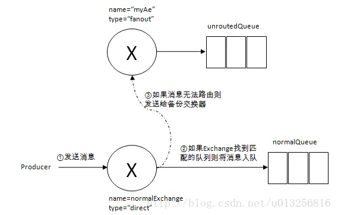
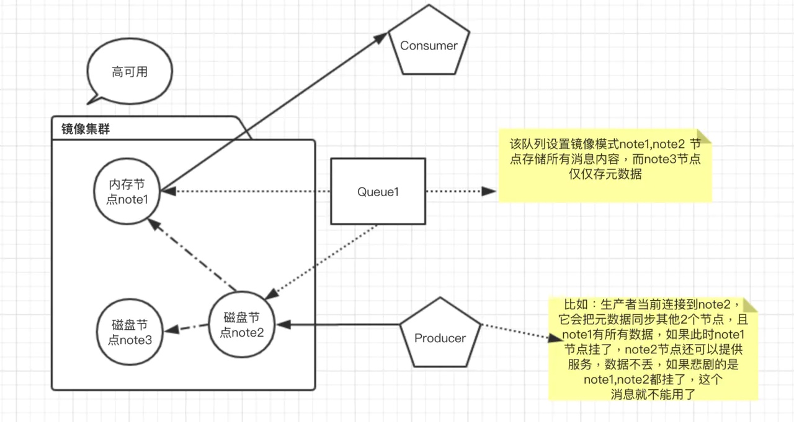

消息丢失场景有哪些
RabbitMQ 丢消息可以分为以下几种场景
- 生产者生产消息到RabbitMQ Server 消息丢失场景
- RabbitMQ Server中存储的消息丢失或可靠性不足
- RabbitMQ Server 到消费者消息丢失
生产这生产消息到 MQ 的消息丢失
1） 外界环境问题导致：发生网络丢包、网络故障等造成RabbitMQ Server端收不到消息，因为生产环境的网络是很复杂的，网络抖动，丢包现象很常见，下面会讲到针对这个问题是如何解决的。
2） 代码层面，配置层面，考虑不全导致消息丢失
事例1:
一般情况下，生产者使用Confirm模式投递消息，如果方案不够严谨，比如RabbitMQ Server 接收消息失败后会发送nack消息通知生产者，生产者监听消息失败或者没做任何事情，消息存在丢失风险；
事例2:
生产者发送消息到exchange后，发送的路由和queue没有绑定，消息会存在丢失情况，下面会讲到具体的例子，保证意外情况的发生，即使发生，也在可控范围内。
RabbitMQ Server中存储的消息丢失或可靠性不足
- 消息未完全持久化，当机器重启后，消息会全部丢失，甚至Queue也不见了
- 单节点模式问题，如果某个节点挂了，消息就不能用了,业务可能瘫痪，只能等待
- 普通集群模式：某个节点挂了，该节点上的消息不能用，有影响的业务瘫痪，只能等待节点恢复重启可用（建立在消息持久化）
普通集群中虽然存在多个节点，但是消息还是不能保证可靠，为什么呢？
因为RabbitMQ 集群模式有点特殊，队列的内容仅仅存在某一个节点上面，不会存在所有节点上面，所有节点仅仅存放消息结构和元数据（可以理解为索引，这也是为了提高性能，如果每次把所有内容同步到所有节点是有开销代价的）。
- 镜像模式：可以解决上面的问题，但是还是有意外情况发生，比如：持久化的消息，保存到硬盘过程中，当前队列节点挂了，存储节点硬盘又坏了，消息丢了，怎么办？
RabbitMQ Server到消费者消息丢失
消费端接收到相关消息之后，消费端还没来得及处理消息，消费端机器就宕机了，此时消息如果处理不当会有丢失风险，后面会讲到如何处理这个情况，消费端也有ack机制
如何避免消息丢失
下面也是从三个方面介绍：
- 1、 生产者生产消息到RabbitMQ Server 可靠性保证
- 2、 RabbitMQ Server中存储的消息如何保证
- 3、 RabbitMQ Server到消费者消息如何不丢
针对生产者和消费者的可靠消息保证
RabbitMQ--消息的生产
RabbitMQ--消息的消费
解决了生产者和消费者的消息可靠性问题之后，我们又要面临另一种情况：mq服务器本身丢失消息，我们来看下如何解决这种情况呢
如何避免 RabbitMQ Server 丢失消息
事务机制和publisher confirm机制确保的是消息能够正确的发送至RabbitMQ，这里的“发送至RabbitMQ”的含义是指消息被正确的发往至RabbitMQ的交换器，如果此交换器没有匹配的队列的话，那么消息也将会丢失，怎么办？
使用mandatory 设置true
我们看下RabbitMQ客户端代码方法：
void basicPublish(String exchange, String routingKey, boolean mandatory, boolean immediate, BasicProperties props, byte[] body)
throws IOException;
我们看下 basicPublish 方法中的 mandatory和immediate
mandatory:
- 当mandatory标志位设置为true时，如果exchange根据自身类型和消息routeKey无法找到一个符合条件的queue， 那么会调用basic.return方法将消息返回给生产者。
- 当mandatory设置为false时，出现上述情形broker会直接将消息扔掉。
immediate:
- 当immediate标志位设置为true时，如果exchange在将消息路由到queue(s)时发现对于的queue上没有消费者， 那么这条消息不会放入队列中。
- 当immediate标志位设置为false时,exchange路由的队列没有消费者时，该消息会通过basic.return方法返还给生产者。
RabbitMQ 3.0版本开始去掉了对于immediate参数的支持，对此RabbitMQ官方解释是：这个关键字违背了生产者和消费者之间解耦的特性，因为生产者不关心消息是否被消费者消费掉
所以为了保证消息的可靠性，需要设置发送消息代码逻辑。如果不单独形式设置mandatory=false，
使用 mandatory 设置true的时候有个关键点要调整，生产者如何获取到没有被正确路由到合适队列的消息呢？通过调用 channel.addReturnListener 来添加ReturnListener 监听器实现，只要发送的消息，没有路由到具体的队列，ReturnListener 就会收到监听消息。
channel.addReturnListener(new ReturnListener() {
public void handleReturn(int replyCode, String replyText, String exchange, String routingKey, AMQP
.BasicProperties basicProperties, byte[] body) throws IOException {
String message = new String(body);
//进入该方法表示，没路由到具体的队列
//监听到消息，可以重新投递或者其它方案来提高消息的可靠性。
System.out.println("Basic.Return返回的结果是：" + message);
}
});
此时有人问了，不想复杂化生产者的编程逻辑，又不想消息丢失，那么怎么办？
还好RabbitMQ提供了一个叫做alternate-exchange东西，翻译下就是备份交换器，这个干什么用呢？很简单，它可以将未被路由的消息存储在另一个exchange队列中，再在需要的时候去处理这些消息。那么如何去实现了？
利用备份交换机（alternate-exchange）
简单一点可以通过RabbitMQ的管理后台设置，当你新建一个exchange业务的时候，可以给它设置Arguments，这个参数就是 alternate-exchange，其实alternate-exchange 就是一个普通的exchange，类型最好是fanout 方便管理

当你发送消息到你自己的exchange时候，对应key没有路由到queue，就会自动转移到alternate-exchange对应的queue，起码消息不会丢失。
下面一张图看下投递过程：

那么有人有个疑问，上面介绍了，两种方式处理，发送的消息无法路由到队列的方案，
如果备份交换器和mandatory参数一起使用，会有什么效果？
答案是：mandatory参数无效
高可用的镜像集群模式
镜像模式至少采用3节点，2个磁盘节点和1个内存节点来保证，架构图：

设置镜像也有一些策略：
- 同步至所有的，一般不这么做，性能会受到极大影响
- 同步最多N个机器
- 只同步至符合指定名称的 nodes
命令处理HA策略模版：
> rabbitmqctl set_policy [-p Vhost] Name Pattern Definition [Priority]
- 为每个以“rock.wechat”开头的队列设置所有节点的镜像，并且设置为自动同步模式
> rabbitmqctl set_policy ha-all "^rock.wechat" '{"ha-mode":"all","ha-sync-mode":"automatic"}'
> rabbitmqctl set_policy -p rock ha-all "^rock.wechat" '{"ha-mode":"all","ha-sync-mode":"automatic"}'
- 为每个以“rock.wechat.”开头的队列设置两个节点的镜像，并且设置为自动同步模式
> rabbitmqctl set_policy -p rock ha-exacly "^rock.wechat" \
'{"ha-mode":"exactly","ha-params":2,"ha-sync-mode":"automatic"}'
- 为每个以“node.”开头的队列分配指定的节点做镜像
> rabbitmqctl set_policy ha-nodes "^nodes\." \
'{"ha-mode":"nodes","ha-params":["rabbit@nodeA", "rabbit@nodeB"]}'
但是：HA 镜像队列有一个很大的缺点就是： 系统的吞吐量会有所下降
所以采用镜像模式，要根据具体的业务规则定制话处理，没那么重要的业务，消息丢了也没关系的场景，又要求必须高的性能的时候，镜像也可以不用设置。